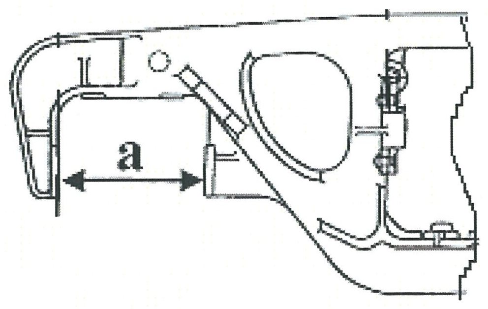
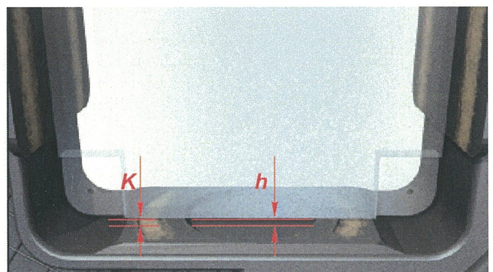
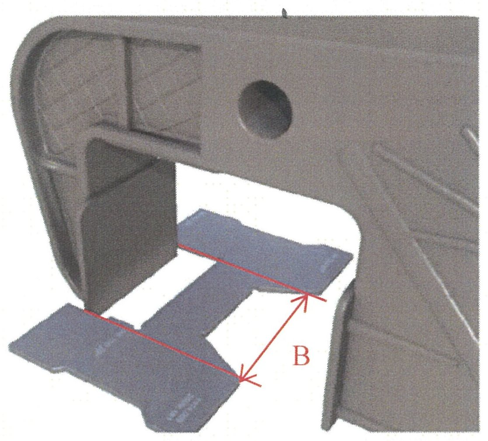
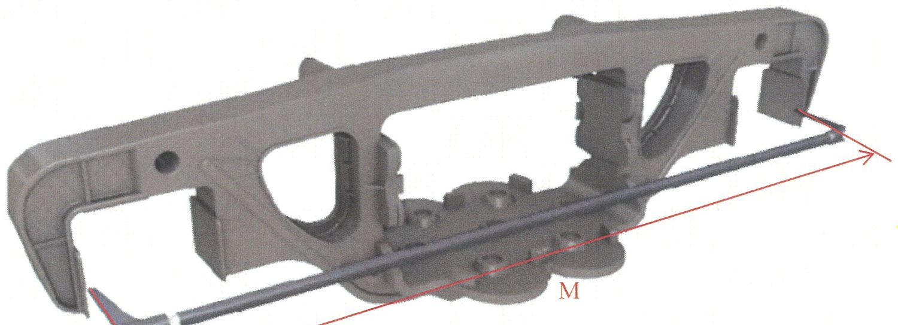

Yon rama: buksa proyomi va bazaviy o'lcham «М»
5.2.1–5.2.4 bandlari: «a», priliv «h», kanavka «К», yo'naltiruvchilar «В» va bazaviy o'lcham «М».
60 mm qoidasi
Yon rama bo'yicha deyarli barcha o'lchashlar bitta umumiy qoidaga bo'ysunadi: o'lchash buksa proyomida ramaning pastki qirrasidan 60 mm balandlikda, har tomondan bajariladi. Bu balandlik tasodifiy tanlanmagan — aynan shu darajada buksa korpusi ramaga tayanadi.
5.2.1 — Buksa proyomi kengligi «a»

Shablon Т914.009 buksa proyomiga kiritilib ishchi yuzalarga tegiziladi. Nazorat proyomning ikkala tomonida va ramaning ikkala buksa proyomida bajariladi; eng kengaygan qiymat hisobga olinadi.
| Holat | «a» me'yori |
|---|---|
| Kapital ta'mir | 335 ± 1 mm |
| Kapital ta'mir, 18-9801 | 335 (+3 / −1) mm |
| Depo ta'miri | 342,0 mm dan ko'p emas |
| Depo ta'miri, 18-100 | 338,0 mm dan ko'p emas |
5.2.2 — Priliv balandligi «h» va kanavkasimon yeyilish «К»

Buksa proyomining tayanch yuzasida quyma prilivi bor. Buksa korpusi u bilan ishqalanib, vaqt o'tishi bilan rama tanasiga kanavka (ariqcha) o'yib yuboradi.
- Nazorat chizg'ichi ШП–400 ni tayanch yuzaga qo'ying — u baza vazifasini bajaradi.
- ШЦ–I–125–0,1 bilan chizg'ich yuzasidan priliv cho'qqisigacha balandlikni o'lchang — «h».
- Chizg'ichni kanavka ustiga ko'ndalang qo'yib, kanavka chuqurligi va kengligini o'lchang.
| Parametr | Me'yor |
|---|---|
| Priliv balandligi «h» | 3,0 mm dan kichik yoki katta bo'lishi mumkin — qiymat qayd etiladi |
| Kanavka chuqurligi (rama tanasiga) | 2,0 mm dan ko'p emas |
| Kanavka kengligi | 20,0 mm dan ko'p emas |
| Kanavka uzunligi | Tayanch yuza kengligidan oshmaydi |
5.2.3 — Yo'naltiruvchilar kengligi «В»

«В» ishchi yuzaning butun balandligi bo'yicha — yuqori, o'rta va pastki qismlarda nazorat qilinadi. Faqat bitta darajada o'lchash konussimon yeyilishni yashirib qo'yadi.
| Holat | «В» me'yori |
|---|---|
| Chizma bo'yicha | 160 ± 1 mm |
| 18-9801 modeli | 160 (+1 / −2) mm |
| Depo ta'miridan chiqarishda | 155 mm dan kam emas |
| Depo ta'miridan chiqarishda, 18-9801 | 154 mm dan kam emas |
5.2.4 — Bazaviy o'lcham «М»

«М» — ramaning ikkita buksa proyomi orasidagi masofa, ya'ni uning bazasi. Rama ekspluatatsiyada cho'zilishi mumkin — u holda g'ildirak juftlari parallel turmaydi va g'ildirak kombasi tez yeyiladi.
| Parametr | Me'yor |
|---|---|
| «М» chizma bo'yicha | 2185 (+7 / −5) mm |
| Depo ta'miridan chiqarishda | 2200,0 mm dan ko'p emas |
| Bitta aravachadagi ikki rama bazalari farqi | 2 mm dan ko'p emas |
Nazorat savollari
Avval o'zingiz javob bering, so'ngra tekshiring.
1. Yon rama bo'yicha o'lchashlar qaysi balandlikda bajariladi?
2. 18-100 aravachasi depo ta'mirida. Buksa proyomi kengligi «a» qancha bo'lishi mumkin?
3. Kanavkasimon yeyilish uchun qanday uchta cheklov bor?
4. «В» ni nima uchun bir necha balandlikda o'lchash kerak?
5. Bitta aravachaning ikkita yon rama bazasi 2186 mm va 2189 mm chiqdi. Xulosa?
Manba: РД 32 ЦВ 050-2020 — ГОСТ 9246-2013 bo'yicha tip 2 yuk vagon aravachalarini ta'mirlashda uzel va detallar parametrlarini o'lchash metodikasi.
Andijon vagon deposi · telejka ta'mirlash sexi.